Intelligent Systems
Robotics, automation, sensors, and software-hardware integration.
Dhaka, Bangladesh / Science Student
I am building a long-term path toward computer engineering, intelligent systems, and robotics through disciplined self-study and practical projects.
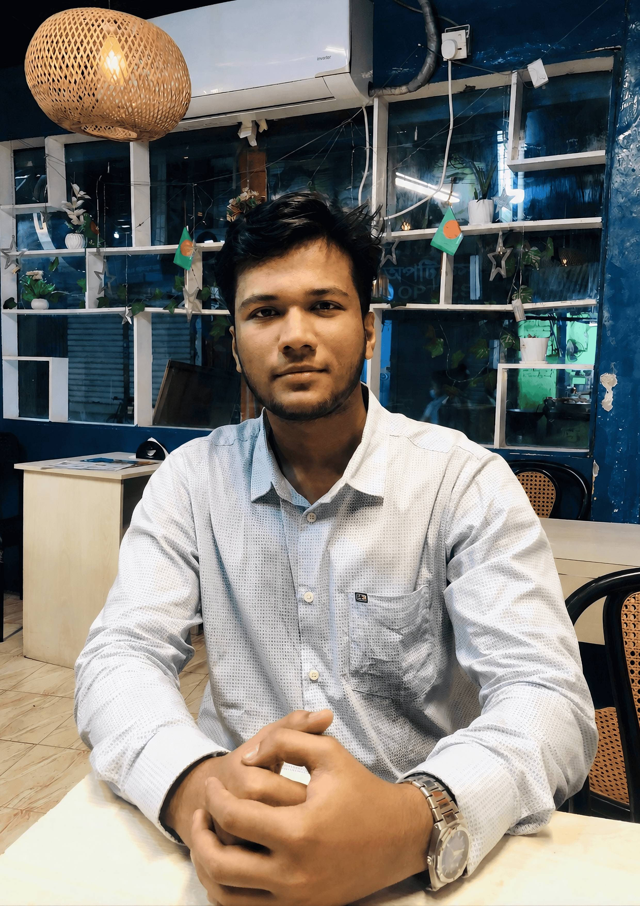
About
I am a science student from Dhaka who enjoys solving problems where software, logic, and physical systems meet. Robotics interests me because it combines programming, sensors, automation, and real-world interaction.
This portfolio is a collection of my actual work and progress: academic achievements, certificates, programming projects, responsive websites, browser games, and practical experience gained both inside and outside the classroom.
Robotics, automation, sensors, and software-hardware integration.
C programming, Python basics, JavaScript, and structured problem solving.
Astronomy, science fairs, technical presentations, and experimentation.
Team coordination, communication, operations, and responsibility under pressure.
Education
Formal study, exam results, and language preparation.
Vashantek Government College
GPA: 4.58. Studied Physics, Chemistry, Mathematics, ICT, and English.
Bhashantek School and College
GPA: 5.00 with recognition for academic performance.
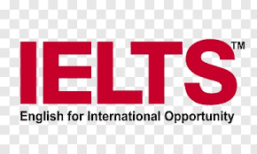
British Council
Overall band score: 6.5. Valid until April 7, 2028.
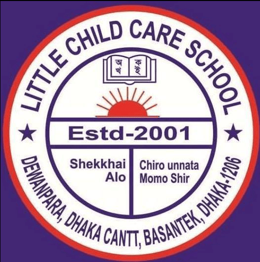
Little Child Care School
Completed junior and primary level study with strong results and school-level recognition.
Achievements
Recognition that reflects academic effort, technical interest, and practical learning.
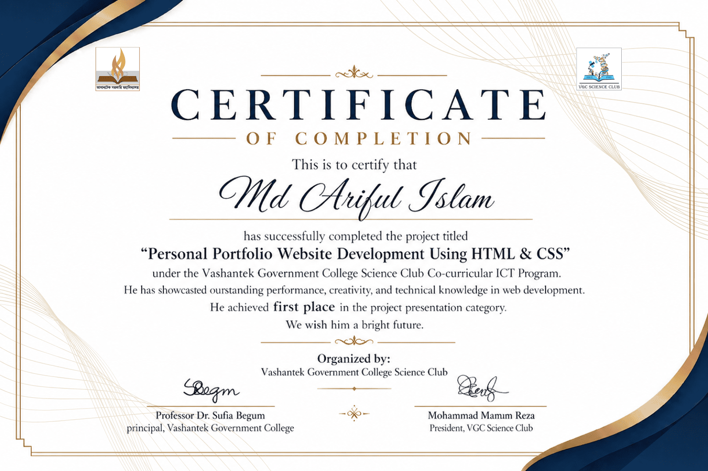
Completed a personal portfolio website using HTML and CSS under the Vashantek Government College Science Club co-curricular ICT program.
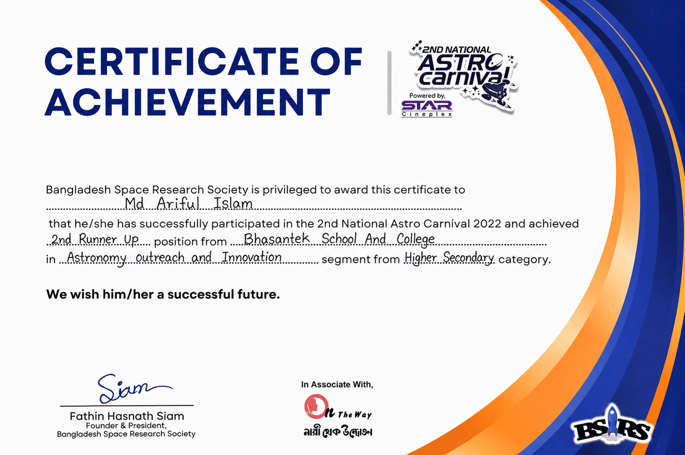
Recognized in the Astronomy Outreach and Innovation segment.
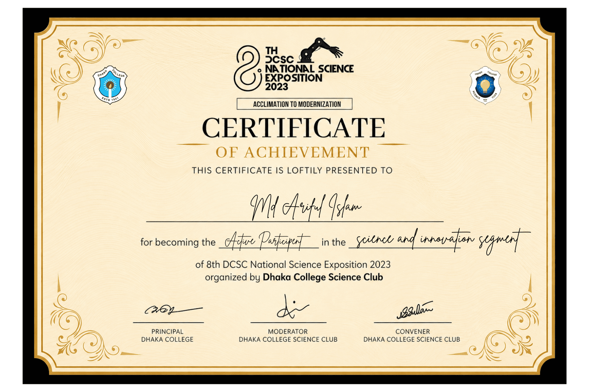
Active participant in the Science and Innovation segment.
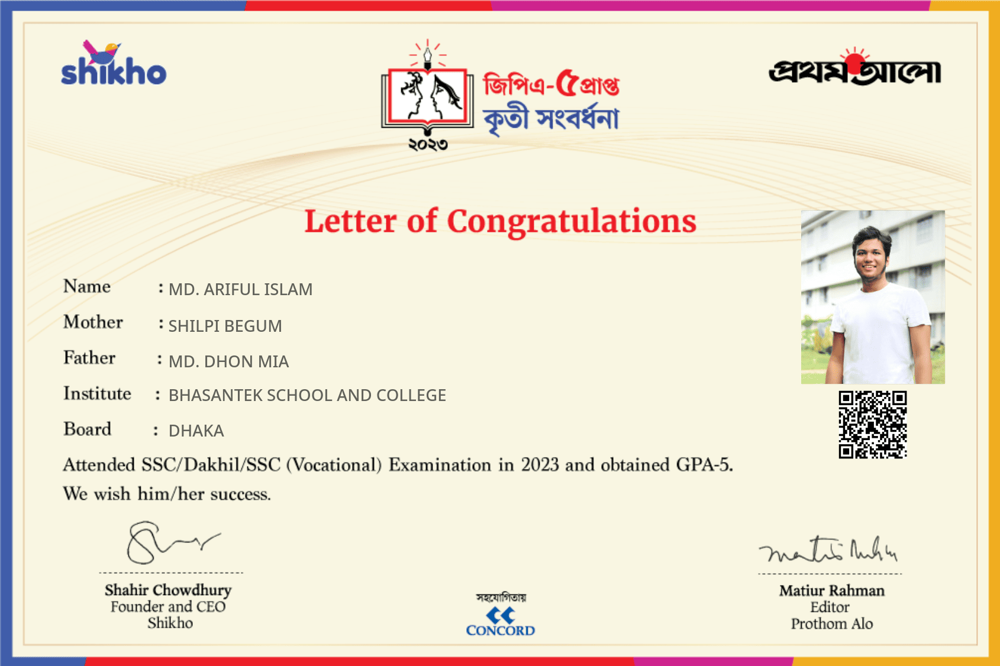
Received a letter of congratulations from Shikho and Prothom Alo after the SSC result.
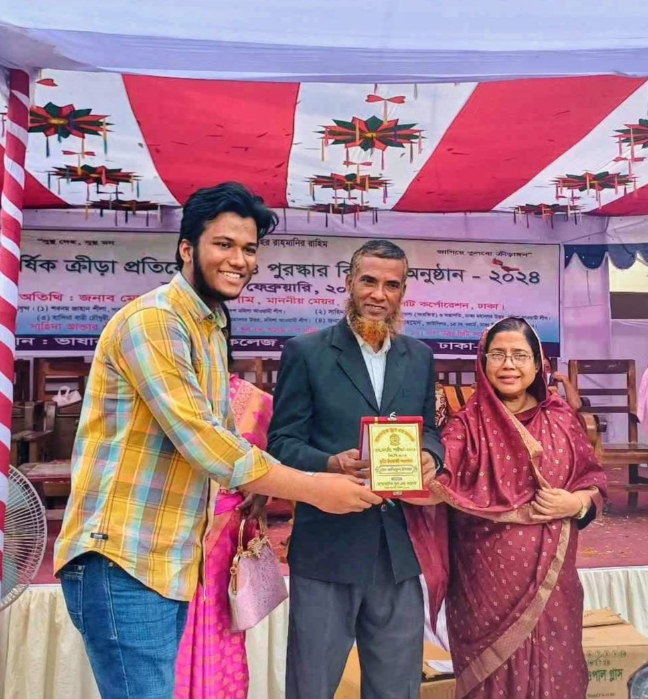
Received formal recognition during a college prize-giving program.
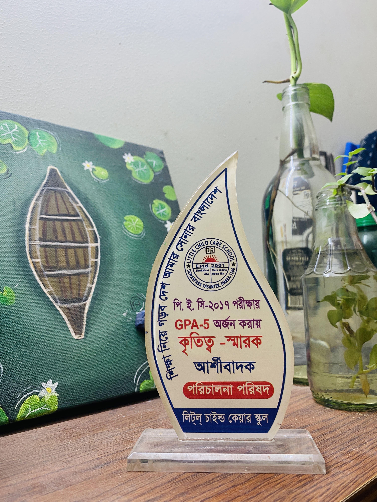
School-level recognition for strong early academic performance.
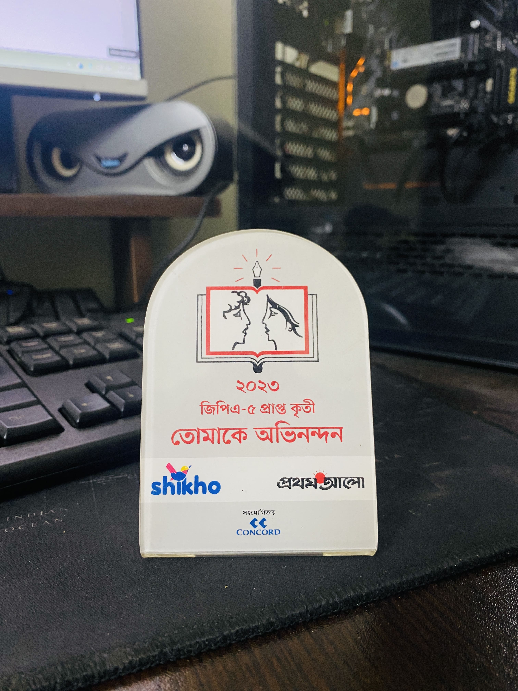
Recognition connected to the 2023 SSC academic result.
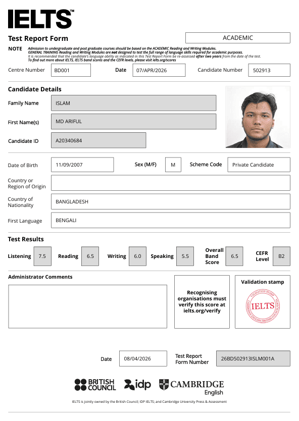
Overall band score 6.5, supporting future academic applications and communication.
Projects
Small and practical projects that demonstrate learning, structure, and consistency.
Designed and built a responsive personal website to present academic history, certificates, projects, and contact information with a clear structure and clean layout.
Built a browser game to practice timing, collision logic, scoring systems, event handling, and interactive gameplay mechanics.
Co-founded Burger Express DWP and developed its responsive website to support branding, online presentation, and customer engagement. Contributed to visual design, creative planning, pricing ideas, and overall business development.
Toolkit
C programming, Python basics, JavaScript, problem solving, debugging, and programming fundamentals.
Interest in robotics, sensors, automation systems, and software-hardware integration.
Physics, chemistry, mathematics, ICT, English reading and writing.
Bangla, English, Hindi, presentation practice, and service experience.
Outside My Academics
Tea or coffee usually sits beside my study table. I enjoy nature when I need to think, cooking when I need to reset, and music while working on repetitive tasks or projects. I value clean surroundings because focus becomes easier in an organized environment.